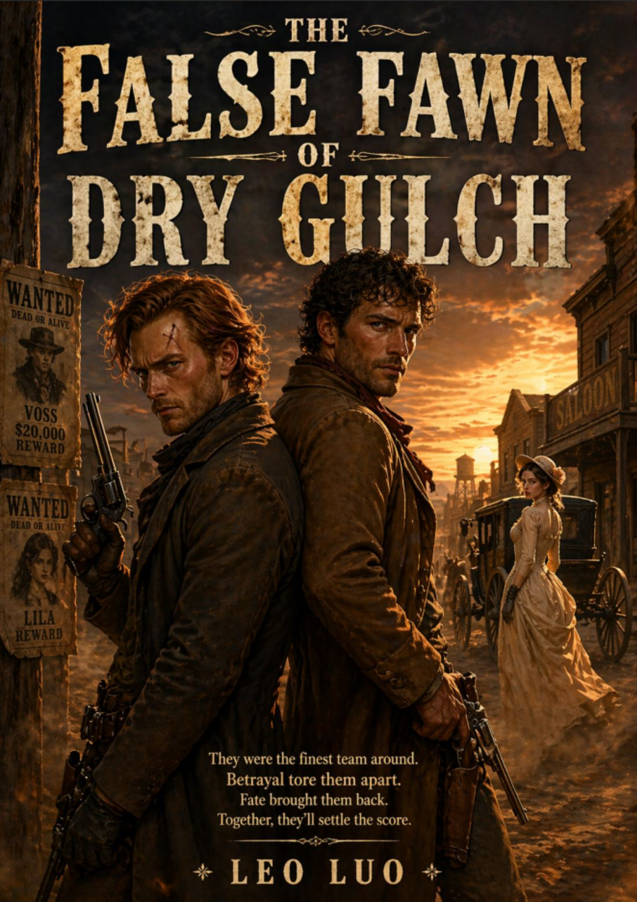

Lofi · Story Library
Choose a Story
Each story now has its own separate page. Click a cover to enter one article directly.

2077 · Silicon Valley, California
Pride, Flesh & Robot
A scientist creates a humanoid copy to hide her illness, only to learn that weakness may invite care instead of shame.
Read Story →
2088 · Salt Lake City, Utah
Outside Eden
A citizen of an AI-governed nation discovers a forbidden world beyond the life planned for her.
Read Story →
2051 · Boston, Massachusetts
The White-Coated Shadow
A celebrated surgeon hides a deadly identity behind his white coat.
Read Story →
1887 · Dry Gulch, Arizona
The False Fawn of Dry Gulch
Two bounty hunters are fooled by a beautiful disguise in the American West.
Read Story →
2043 · Houston, Texas
The Man No One Knew
A feared man tries to change for love, but learns that love cannot be forced.
Read Story →